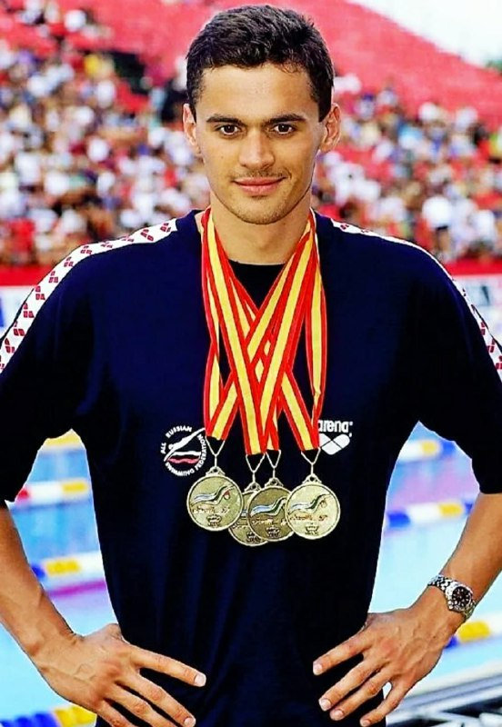

Александр Попов родился 16 ноября 1971 года в закрытом городе Свердловск-45 (ныне — Лесной). Он начал заниматься плаванием в семилетнем возрасте благодаря родителям, которые были обычными рабочими завода и были далеки от профессионального спорта. После окончания школы Попов переехал в Волгоград, где поступил в государственный институт физической культуры. Поначалу он попал к тренеру, который специализировался в плавании на спине, однако в этом виде показать хорошие результаты не удалось. Прогресс начался после перехода к тренеру Геннадию Турецкому, который переквалифицировал Александра на вольный стиль. Уже через год на своем первом чемпионате Европы-1991, который проходил в Афинах, россиянин в 19-летнем возрасте завоевал три золотых медали. Тогда Попов одержал первую крупную победу на стометровке вольным стилем, на которой в дальнейшем не проигрывал семь лет подряд Первые же Олимпийские Игры завершились для Попова триумфально. В 1992 году в Барселоне он победил на дистанциях 50 и 100 м, а также взял две серебряные медали в эстафетах.
После Олимпиады были многочисленные победы на чемпионатах мира и Европы, а в 1994-м Александр побил мировой рекорд на стометровке в Риме. К Играм-1996 в Атланте Попов подходил в качестве главного фаворита. Американцы ожидали увидеть триумф своего соотечественника Гэри Холла, однако отчаянная поддержка и психологическое воздействие на Попова со стороны СМИ не помешали россиянину вновь стать сильнейшим на спринтерских дистанциях 50 и 100 м. Буквально через месяц после успеха в Атланте на Попова было совершено нападение, после которого он чудом остался жив. Во время прогулки по Москве в компании друзей завязался конфликт с продавцами в торговых палатках, в результате которого началась драка и Александр получил опасное ножевое ранение. Благодаря водителю-частнику его смогли быстро доставить в больницу, где врачи диагностировали, что нож прошел на 15 сантиметров вглубь, задел левую почку, пробил диафрагму и порезал легкое. Спас Попова хирург Автандил Манвелидзе, причем спас не только его жизнь, но и карьеру — благодаря операции, которая не повредила мышцы. Через день после выхода из больницы Александр крестился. А спустя некоторое время он смог продолжить спортивную карьеру. В дальнейшем Попов еще четыре раза побеждал на чемпионатах мира и десять раз — на чемпионатах Европы. Мировое первенство 2003-го в Барселоне стало очередным звездным часом российского спортсмена — на нем он смог трижды подняться на верхнюю ступень пьедестала. Однако завоевать золото на Олимпиаде ему больше не удалось. В 2000 году в Сиднее он финишировал вторым на стометровке, проиграв в финале 0,39 секунды Питеру ван ден Хугенбанду из Нидерландов, а на 50-метровой дистанции занял лишь шестое место. В 2004-м в Афинах Попов был выбран знаменосцем сборной России на церемонии открытия Игр, однако по итогам соревнований 32-летний пловец остался без медалей. Последняя значимая победа была одержана на чемпионате Европы-2004 в Мадриде — на коронной дистанции 50 м вольным стилем. Попов завершил карьеру четырехкратным олимпийским чемпионом, шестикратным победителем чемпионатов мира и 21-кратным чемпионом Европы, а также многократным рекордсменом мира и Европы. Россиянин являлся одним из наиболее доминирующих и титулованных пловцов на мировом уровне в 1990-е годы. Он делит с Владимиром Сальниковым рекорд среди всех советских и российских пловцов по количеству золотых олимпийских наград — по 4. Попов был удостоен званий заслуженного мастера спорта СССР в 1992-м и лучшего спортсмена Российской Федерации в 1996-м. Кроме того, Александр является кавалером и почетным членом Международного олимпийского комитета, членом Совета при Президенте Российской Федерации по физической культуре и спорту, а в 2018-м он баллотировался на пост президента Олимпийского комитета России.
.jpeg)
В 2007 году Попов стал сооснователем группы компаний «Академия Александра Попова», которая занимается строительством спортивных объектов, поставками и монтажом оборудования бассейнов марки Myrtha Pools. Наиболее крупным проектом компании является возведение трех временных бассейнов для проведения чемпионата мира по водным видам спорта 2015 года в Казани. Также в 2007 году Попов учредил детско-юношеские соревнования по плаванию «Кубок Александра Попова» для детей от 12 до 15 лет. В 2009 году турнир получил всероссийский статус и стал частью подготовки российских пловцов. На протяжении 25 лет вплоть до Игр-2020 в Токио Попов оставался последним российским олимпийским чемпионом в плавании. Эту неудачную серию смог прервать лишь Евгений Рылов, завоевавший прошедшим летом два золота на дистанциях 100 и 200 м на спине.